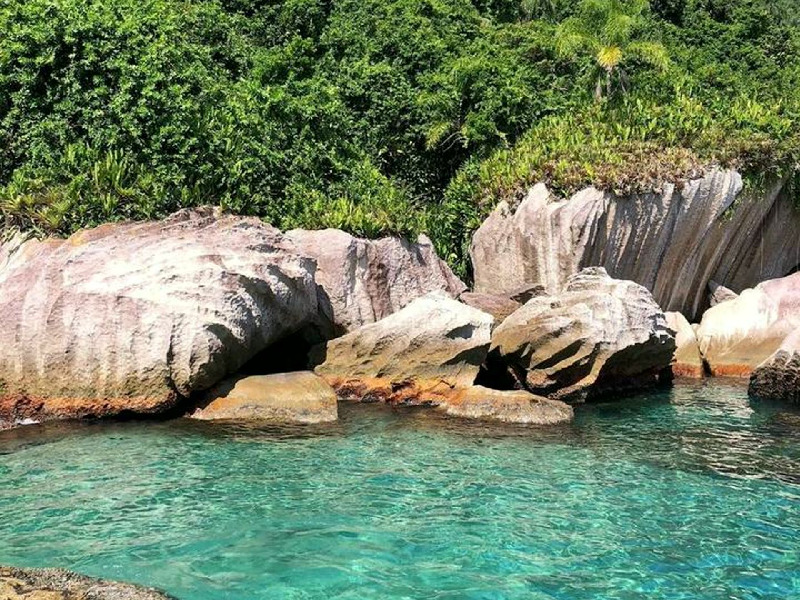
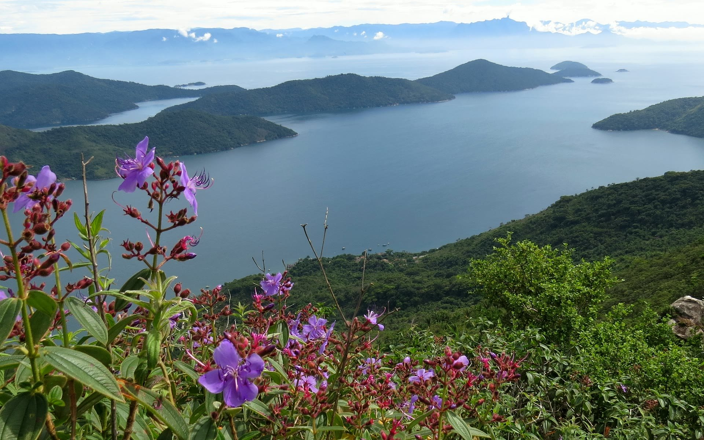
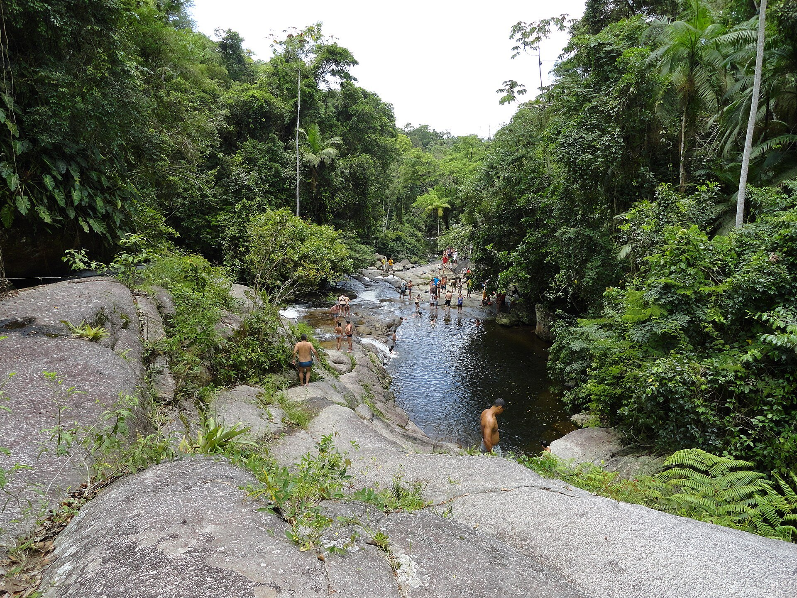
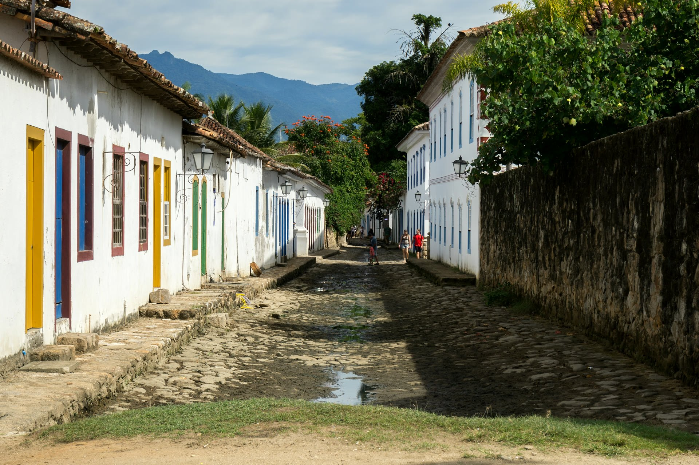

Quatro jeitos de viver Paraty.

Águas calmas e cristalinas.

O único fiorde tropical do Brasil.

Poços de água verde e cachaça artesanal.

Ruas do século XVIII e roteiro sob medida.
PARADA 01 · CAIS
Escolha o passeio e chame no WhatsApp.